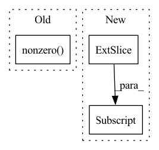

Pattern ID :445
Before Change
ignore_overlaps = bbox_overlaps(
bboxes, gt_bboxes_ignore, mode="iof")
ignore_max_overlaps, _ = ignore_overlaps.max(dim=1)
ignore_bboxes_inds = torch.nonzero(
ignore_max_overlaps > self.ignore_iof_thr) .squeeze()
if ignore_bboxes_inds.numel() > 0:
overlaps[ignore_bboxes_inds[:, 0], :] = -1
After Change
ignore_overlaps = bbox_overlaps(
gt_bboxes_ignore, bboxes, mode="iof")
ignore_max_overlaps, _ = ignore_overlaps.max(dim=0)
overlaps[:, ignore_max_overlaps > self.ignore_iof_thr] = -1
assign_result = self.assign_wrt_overlaps(overlaps, gt_labels)
return assign_resultIn pattern: SUPERPATTERN
Frequency: 6
Non-data size: 3
Instances Fragment ID: 2469047
Project Name: wxinlong/solo
Commit Name: 801c8b19931fb40774eda6dbb6917b6d1085ce8a
Time: 2019-02-13
Author: chenkaidev@gmail.com
File Name: mmdet/core/bbox/assigners/max_iou_assigner.py
M Class Name: MaxIoUAssigner
N Class Name: MaxIoUAssigner
M Method Name: assign(5)
N Method Name: assign(5)
M Parent Class: BaseAssigner
N Parent Class: BaseAssigner
M File Name: mmdet/core/bbox/assigners/max_iou_assigner.py
N File Name: mmdet/core/bbox/assigners/max_iou_assigner.py
M Start Line: 72
M End Line: 84
N Start Line: 75
N End Line: 90
Before Change
labels = []
for tuple in subject_relation_pairs:
indices_duplicates = (subject_relation_pairs == tuple).all(axis=1).nonzero()
objects = pos_triples[indices_duplicates, 2:3]
objects = np.unique(np.ndarray.flatten(objects))
label_vec = np.in1d(entities, objects) * 1
labels.append(label_vec)After Change
for subj_rel in subject_relation_pairs:
subj_rel_rep = np.repeat(subj_rel,axis=0)
label = (pos_triples[:,0:2] == subj_rel).all(axis=1)
// objects = pos_triples[mat, 2:3]
// objects = np.unique(np.ndarray.flatten(objects))
// label_vec = np.in1d(entities, objects) * 1 Fragment ID: 2469046
Project Name: pykeen/pykeen
Commit Name: c9302b9f07967d1d474435e53355e3bd308cfd45
Time: 2018-09-12
Author: ali-mehdi@live.de
File Name: src/utilities/train_utils.py
M Class Name: AnonimousClass
N Class Name: AnonimousClass
M Method Name: train_conv_e_model(7)
N Method Name: train_conv_e_model(7)
M Parent Class:
N Parent Class:
M File Name: src/utilities/train_utils.py
N File Name: src/utilities/train_utils.py
M Start Line: 108
M End Line: 140
N Start Line: 100
N End Line: 128
Before Change
A_n_scipy = (A_abs - A)/2
self.edge_index_p = LongTensor(np.array(A_p_scipy.nonzero()))
self.edge_weight_p = FloatTensor(sp.csr_matrix(A_p_scipy).data)
self.edge_index_n = LongTensor(np.array(A_n_scipy.nonzero() ))
self.edge_weight_n = FloatTensor(sp.csr_matrix(A_n_scipy).data)
self.edge_weight = FloatTensor(self.A.data)
self.A_p = A_p_scipyAfter Change
def separate_positive_negative(self):
ind = self.edge_weight > 0
self.edge_index_p = self.edge_index[:,ind]
self.edge_weight_p = self.edge_weight[ind]
ind = self.edge_weight < 0
self.edge_index_n = self.edge_index[:,ind]
self.edge_weight_n = - self.edge_weight[ind] Fragment ID: 2469057
Project Name: sherylhyx/pytorch_geometric_signed_directed
Commit Name: 1e4df62c104487ca2a010c9efe1287cba3106b3d
Time: 2022-02-13
Author: He_YX@outlook.com
File Name: torch_geometric_signed_directed/data/signed/SignedData.py
M Class Name: SignedData
N Class Name: SignedData
M Method Name: separate_positive_negative(1)
N Method Name: separate_positive_negative(1)
M Parent Class: Data
N Parent Class: Data
M File Name: torch_geometric_signed_directed/data/signed/SignedData.py
N File Name: torch_geometric_signed_directed/data/signed/SignedData.py
M Start Line: 69
M End Line: 79
N Start Line: 67
N End Line: 74
Before Change
print(arr_for_pca.shape)
nan_annotated = torch.isnan(arr_for_pca)
good_indices = torch.nonzero( torch.logical_not(torch.isnan(arr_for_pca)))
print(nan_indices)
print(good_indices)
good_arr_for_pca = arr_for_pca.index_select()
pca = PCA(n_components=4, svd_solver="full")After Change
arr_for_pca = format_mouse_data(data_arr)
bad_indices = torch.nonzero(torch.isnan(arr_for_pca))
all_indices = [i for i in range(arr_for_pca.shape[1])]
bad_indices = bad_indices[:, 1]
good_indices = [x for x in all_indices if x not in bad_indices] //can I do comprehensions like this with tensors?
good_arr_for_pca = arr_for_pca.index_select(dim = 1, index = torch.tensor(good_indices))
pca = PCA(n_components=4, svd_solver="full")
pca.fit(good_arr_for_pca.T) Fragment ID: 2469058
Project Name: danbider/lightning-pose
Commit Name: 0cb9ee00cb125da79f4c4b40748fa4ed5ced9bd5
Time: 2021-09-22
Author: ubuntu@ip-172-31-72-121.ec2.internal
File Name: pose_est_nets/datasets/datamodules.py
M Class Name: UnlabeledDataModule
N Class Name: UnlabeledDataModule
M Method Name: computePCA_params(3)
N Method Name: computePCA_params(3)
M Parent Class: BaseDataModule
N Parent Class: BaseDataModule
M File Name: pose_est_nets/datasets/datamodules.py
N File Name: pose_est_nets/datasets/datamodules.py
M Start Line: 221
M End Line: 234
N Start Line: 214
N End Line: 225
Before Change
// not needed to device since it"s only for indices.
scaff = torch.zeros(seqs.shape[1], 14)
scaff[:, 0] = 1
idxs = torch.nonzero( scaff) .reshape(-1)
for s,seq in enumerate(seqs):
for i,idx in enumerate(idxs):After Change
if mat:
// trims the matrix at last row/col occupied
lims = attr_mat.nonzero().t().long().amax().item()+1
return attr_mat.bool().to(seqs.device)[...:, :lims, :lims] , attr_mat.to(device)[...:, :lims, :lims]
else:
edge_idxs = attr_mat[0].nonzero().t().long()
edge_attrs = attr_mat[0, edge_idxs[0], edge_idxs[1]] Fragment ID: 2469055
Project Name: lucidrains/alphafold2
Commit Name: e361277a48c9514d016c333185d83e63a882c0c2
Time: 2021-05-16
Author: ericalcaide1@gmail.com
File Name: alphafold2_pytorch/utils.py
M Class Name: AnonimousClass
N Class Name: AnonimousClass
M Method Name: prot_covalent_bond(4)
N Method Name: prot_covalent_bond(4)
M Parent Class:
N Parent Class:
M File Name: alphafold2_pytorch/utils.py
N File Name: alphafold2_pytorch/utils.py
M Start Line: 500
M End Line: 525
N Start Line: 500
N End Line: 526
Before Change
.triu()
.to(ori_tensor.device)
)
upper_diag_ids = torch.nonzero( uppder_ones.view(-1), as_tuple=False) .view(-1)
// flat_tensor: (batch_size, matrix_size * matrix_size, hidden_size)
flat_tensor = tensor.view(tensor.size(0), tensor.size(1), -1).permute(0, 2, 1)
tensor_upper = torch.index_select(flat_tensor, dim=1, index=upper_diag_ids)After Change
:return: (batch_size, matrix_size + ... + 1, hidden_size)
bs, matrix_size, matrix_size, hidden_size = tensor.shape
mask = torch.ones(matrix_size, matrix_size, device=tensor.device).triu().bool()[
None, :, :, None]
return tensor.masked_select(mask).reshape(bs, -1, hidden_size)
def forward(self, seq_hiddens):
Fragment ID: 2469050
Project Name: junnyu/gplinker_pytorch
Commit Name: 646f478a00ca38cb2975716cba55ca2aee83b980
Time: 2022-02-28
Author: 573009727@qq.com
File Name: utils/components.py
M Class Name: HandshakingKernel
N Class Name: HandshakingKernel
M Method Name: upper_reg2seq(2)
N Method Name: upper_reg2seq(2)
M Parent Class: nn.Module
N Parent Class: nn.Module
M File Name: utils/components.py
N File Name: utils/components.py
M Start Line: 247
M End Line: 258
N Start Line: 247
N End Line: 250